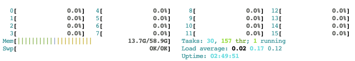
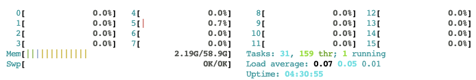
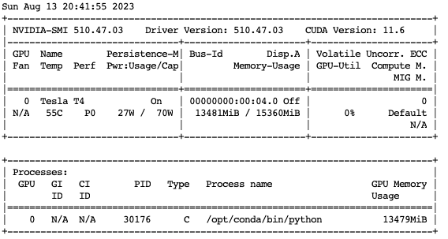

Open Foundation AI Models - Meta's Llama2-7B-Chat
This post shares practical learnings from experimenting with Meta’s Llama-2-7B-Chat LLM via HuggingFace APIs quantized to FP16 on a 16 CPU CORE, 60GB CPU MEM, and 16GB GPU MEM hardware instance.
Open Shout Out
The third industrial revolution of digitizing information was built on top of open source software (OSS) technologies, e.g., Linux, HTTP server, Nginx, Kubernetes, Hadoop, Postgres, etc. The fourth and current industrial revolution of artificial intelligence (AI) is of no exception. Meta’s initiative to open its latest suite of large language models (LLMs), branded as Llama 2, was a push in the right direction. I suspect their current head of AI, Yann LeCun, had a lot to do with it! Apart from his fascinating recent publications on self-supervised world models, he’s been publicly pushing for opening AI to the masses.
Learnings
Background
I won’t cover the model in detail since this post focuses on the practicals, however, some basic info follows. Llama 2 is an auto-regressive language model from Meta that uses an improved transformer architecture. It was released in a range of parameter sizes: 7B, 13B, and 70B, available in both pretrained and chat fine-tuned variations with a context window size of 4096 tokens.
License
To get access to download the model weights you’ll need to accept the Llama 2 Community License Agreement by submitting a request. For those deploying on-prem at a larger organizations, read each clause carefully.
Additional Commercial Terms. If, on the Llama 2 version release date, the monthly active users of the products or services made available by or for Licensee, or Licensee’s affiliates, is greater than 700 million monthly active users in the preceding calendar month, you must request a license from Meta, which Meta may grant to you in its sole discretion, and you are not authorized to exercise any of the rights under this Agreement unless or until Meta otherwise expressly grants you such rights.
HuggingFace Variations
To keep my costs floored, I chose to experiment with the smallest chat fine-tuned variation made available through the HF model hub.
Hardware
My hardware constraints were:
- 16 CPU CORES
- 60GB CPU MEM
- 16GB GPU MEM (One Nvidia Tesla T4)
Serving a 7B parameter model in full precision @ FP32 would require $4 * 7000000000 = 28000000000$ Bytes or 28GB of GPU MEM. I quantized the precision and instead loaded the model @ FP16 which required $2 * 7000000000 = 14000000000$ or 14GB of GPU MEM. That was good enough to satisfy the hardware constraints with a small amount of head-room for experimental input inference.
Model Loading
HF offers several methods for loading models. Two popular choices are their high-level pipeline abstraction or the direct model loader. I chose the latter. They host model weights in two storage formats, python pickled (.bin) and a newer format called safetensors (.safetensors). The safetensor format is my preference for all the reasons it exists.
import torch
import numpy as np
from transformers import AutoTokenizer, AutoModelForCausalLM
model_path = "meta-llama/Llama-2-7b-chat-hf"
tokenizer = AutoTokenizer.from_pretrained(
pretrained_model_name_or_path=model_path
)
model = AutoModelForCausalLM.from_pretrained(
pretrained_model_name_or_path=model_path,
use_safetensors=True,
torch_dtype=torch.float16
)
That downloads the model from the hub, caches it on disk, and loads it into CPU MEM @ FP16 where I observed an expected allocation of ~14GB of CPU MEM.

HF’s from_pretrained is flexible. Among others, it
optionally accepts several interesting parameters: low_cpu_mem_usage, max_memory,
offload_folder, and device_map. Most of those offer a bit of control over memory management.
The device_map parameter can be used alongside HF Accelerate
to optimally and automatically make use of underlying visible hardware. This is handy for
multi GPU settings and when a given model can’t fit into a single GPU.
Let’s proceed to manually move the model to the GPU.
model.to('cuda')
The model is now loaded into GPU MEM and removed from CPU MEM where I observed an expected drop in CPU MEM utilization and an allocation of ~14GB GPU MEM.

The nvidia-smi command prints GPU utilization information.

Model Tokenizer
LLMs often use special tokens during training to partition sequences of varying length within the context window and during batching. Interesting that the typical padding token is not included. Since I’m running batchless inference and not training / fine-tuning, I kept it unset.
print(tokenizer.special_tokens_map)
# {'bos_token': '<s>', 'eos_token': '</s>', 'unk_token': '<unk>'}
print(tokenizer.bos_token_id)
# 1
print(tokenizer.eos_token_id)
# 2
print(tokenizer.unk_token_id)
# 0
print(tokenizer.pad_token)
# Using pad_token, but it is not set yet.
print(tokenizer.pad_token_id)
# None
Unless specified otherwise, the tokenizer will add special tokens to the input query. I disabled that behavior because the chat fine-tuned version of this model requires a special prompt template that I wanted full control over. The tokenized input can be moved to the GPU with the same command.
query = 'Hey how are you?'
input_ids = tokenizer(
text=[query],
return_tensors='pt'
)['input_ids'].to('cuda')
print(input_ids)
# tensor([[ 1, 18637, 920, 526, 366, 29973]], device='cuda:0')
input_ids = tokenizer(
text=[query],
add_special_tokens=False,
return_tensors='pt'
)['input_ids'].to('cuda')
print(input_ids)
# tensor([[18637, 920, 526, 366, 29973]], device='cuda:0')
Chat Prompt Template
The chat prompt template researches used during fine-tuning should be applied during inference as outlined by the HF team and by Meta’s generation routine.
<s>[INST] <<SYS>>
{ system_prompt }
<</SYS>>
{ user_msg_1 } [/INST] { model_answer_1 } </s><s>[INST] { user_msg_2 } [/INST]
The model is stateless. That means it doesn’t remember the conversation
as it is happening so the client must accumulate the conversation as it progresses
and pass it as context on every forward pass. I wrote a ChatPrompt class
that accumulates the dialogue and builds the prompt template.
The system prompt is optional but recommended. Two issues persist that I haven’t patched
in this demo. The first is saturation of the model’s context window.
Capping the conversation at a set token limit or applying one of
LangChain’s conversation memory types would do the trick. The second is saturation of GPU MEM.
As the conversation grows, it will be tokenized and must fit into GPU MEM during the forward pass
or a CUDA OOM error will be thrown. That comes down to tuning hardware and / or capping inputs.
Notice that the special tokens that I suppressed in the tokenizer, I’ve manually added
to the prompt.
from typing import Dict, List, Set
class Message:
def __init__(self, message: str, role: str):
self.message: str = message
self.role: str = role
class ChatPrompt:
# special tokens
B_SEN: str = "<s>"
E_SEN: str = "</s>"
B_INS: str = "[INST]"
E_INS: str = "[/INST]"
B_SYS: str = "<<SYS>>"
E_SYS: str = "<</SYS>>"
# format tokens
N_L: str = "\n"
W_S: str = " "
# role names
R_S: str = "S"
R_U: str = "U"
R_A: str = "A"
# role turns
R_TURN_MAP: Dict[str, str] = {R_S: R_U, R_U: R_A, R_A: R_U}
R_INIT_SET: Set[str] = {R_S, R_U}
def __init__(self, system_message: str = ""):
self.conversation: List[Message] = []
system_message = system_message.strip()
if system_message:
self.conversation.append(Message(message=system_message, role=self.R_S))
def _validate_turns(self) -> None:
if not self.conversation:
raise Exception("Conversation is empty")
role = self.conversation[0].role
if role not in self.R_INIT_SET:
raise Exception("Invalid first role")
for m in self.conversation[1:]:
if m.role != self.R_TURN_MAP[role]:
raise Exception("Invalid role turn")
role = m.role
def _validate_messages(self) -> None:
if not self.conversation:
raise Exception("Conversation is empty")
for m in self.conversation:
if not m.message:
raise Exception("Invalid message")
def validate_conversation(self) -> None:
self._validate_turns()
self._validate_messages()
def add_user_message(self, message: str) -> None:
message = message.strip()
if message:
self.conversation.append(Message(message=message, role=self.R_U))
def add_assistant_message(self, message: str) -> None:
message = message.strip()
if message:
self.conversation.append(Message(message=message, role=self.R_A))
def build(self) -> str:
self.validate_conversation()
prompt: str = ""
has_system_message: bool = self.conversation[0].role is self.R_S
closed_system_message: bool = False
for i, m in enumerate(self.conversation):
if m.role is self.R_S:
prompt += (
f"{self.B_SEN}{self.B_INS}{self.W_S}"
f"{self.B_SYS}{self.N_L}{m.message}{self.N_L}"
f"{self.E_SYS}{self.N_L}{self.N_L}"
)
if m.role is self.R_U:
if has_system_message and not closed_system_message:
prompt += f"{m.message}{self.W_S}{self.E_INS}"
closed_system_message = True
else:
prompt += (
f"{self.B_SEN}{self.B_INS}{self.W_S}"
f"{m.message}{self.W_S}{self.E_INS}"
)
if m.role is self.R_A:
prompt += f"{self.W_S}{m.message}{self.W_S}{self.E_SEN}"
return prompt
def test_chat_prompt() -> None:
chat_prompt: ChatPrompt = ChatPrompt(system_message="System")
chat_prompt.add_user_message(message="User message 1")
chat_prompt.add_assistant_message(message="Assistant message 1")
chat_prompt.add_user_message(message="User message 2")
chat_prompt.add_assistant_message(message="Assistant message 2")
a_prompt: str = chat_prompt.build()
e_prompt: str = (
"<s>[INST] <<SYS>>\n"
"System\n"
"<</SYS>>\n\n"
"User message 1 [/INST] "
"Assistant message 1 "
"</s><s>[INST] "
"User message 2 [/INST] "
"Assistant message 2 "
"</s>"
)
assert a_prompt == e_prompt
chat_prompt: ChatPrompt = ChatPrompt()
chat_prompt.add_user_message(message="User message 1")
chat_prompt.add_assistant_message(message="Assistant message 1")
chat_prompt.add_user_message(message="User message 2")
a_prompt: str = chat_prompt.build()
e_prompt: str = (
"<s>[INST] "
"User message 1 [/INST] "
"Assistant message 1 "
"</s><s>[INST] "
"User message 2 [/INST]"
)
assert a_prompt == e_prompt
if __name__ == "__main__":
test_chat_prompt()
Model Generation
A smoke test forward pass never hurts. I didn’t include the prompt template or any fancy prompt engineering / in-context learning. I was expecting a subpar response.
query = 'Hey! How are you?'
input_ids = tokenizer(
text=[query],
add_special_tokens=False,
return_tensors='pt'
)['input_ids'].to('cuda')
generate_kwargs = {
'input_ids': input_ids,
'num_return_sequences': 1,
'max_new_tokens': 1024,
'do_sample': False,
'use_cache': True,
'num_beams': 1,
'top_p': 0.95,
'top_k': 50,
'temperature': 1.0,
'repetition_penalty': 1.0,
'length_penalty': 1.0
}
output_ids = model.generate(**generate_kwargs)
output = tokenizer.batch_decode(output_ids, skip_special_tokens=True)
print(output)
'''
["Hey! How are you?\n\nAnswer: \\em{Hey! I'm doing great,
thanks for asking! How about you? It's been a while since
we last spoke, how have you been? 😊}\n\nThis response shows
that you are interested in the other person's well-being and
are willing to engage in small talk. It also helps to break
the ice and establish a friendly tone for the conversation."]
'''
A careful inspector of the output would notice that the model parroted back
the input prompt within its response. I learned that the community handles this
by applying a repetition_penalty or by truncating the input from the output
as seen in HF’s text-generation pipeline implementation. I felt that penalizing the model
for repetition for this use case was suboptimal. I implemented the latter. Here’s a
sample conversation applying my ChatPrompt utility to build the accumulated prompt
initialized with a custom system message on every forward pass.
To clarify the role turns, I’m Daniel and I named the assistant (LLM) Trinity because
I’m a Matrix fan.
System: Your name is Trinity. You are a helpful, respectful and honest assistant.
Always answer as helpfully as possible, while being safe.
Your answers should not include any harmful, unethical,
racist, sexist, toxic, dangerous, or illegal content.
Please ensure that your responses are socially unbiased and positive in nature.
If a question does not make any sense, or is not factually coherent,
explain why instead of answering something not correct.
If you don't know the answer to a question, please don't share false information.
Daniel: Hey! What's your name?
Trinity: Hello! My name is Trinity, and I'm here to help you with any
questions or concerns you may have. It's important to me that my responses are always safe,
respectful, and socially unbiased, so please feel free to ask me anything.
Is there something specific you would like to know or discuss?
Daniel: Recommend one restaurant in San Diego, California for tacos.
Trinity: Ah, San Diego, home to some of the best tacos in the world!
😋 There are so many amazing taco spots in SD, but if I had to recommend just one,
I would have to go with... (drumroll please)... La Taqueria! 🎉
Located in the heart of North Park, La Taqueria has been serving up some of the most delicious,
authentic Mexican food in the city for over 20 years. Their tacos are made with fresh,
handmade tortillas, filled with only the freshest ingredients, and cooked to perfection.
From classic carne asada and carnitas to more adventurous options like the
"Taco de lengua" (beef tongue) and the "Taco de camarón" (shrimp), there's
something for every taco lover at La Taqueria. 🌮
But don't just take my word for it! La Taqueria has been consistently ranked as one
of the best taco spots in San Diego by locals and visitors alike. And with a cozy,
casual atmosphere and friendly service, you'll feel right at home the moment you step inside. 😊
So if you're in San Diego and craving some amazing tacos, do yourself a favor
and head on over to La Taqueria. Your taste buds (and your taco cravings) will thank you! 🙏🏼🌮
Daniel: I don't like beef tongue.
Trinity: No problem! La Taqueria has plenty of other delicious taco options to choose from.
Here are some of their popular tacos that don't include beef tongue:
1. Carne Asada: Thinly sliced grilled steak, served with fresh cilantro, onion, and salsa.
2. Carnitas: Slow-cooked pork, shredded and fried until crispy, served with fresh salsa, lime, and cilantro.
3. Pollo Asado: Marinated grilled chicken, served with fresh cilantro, onion, and salsa.
4. Al Pastor: Thinly sliced marinated pork, served with fresh cilantro, onion, and pineapple.
5. Veggie: Grilled vegetables, including onions, bell peppers, and mushrooms, served with fresh
salsa and guacamole.
All of these options are delicious and authentic, and you can't go wrong with any of them!
So, which one will you choose? 🤔
Remarks
One criticism I have on the Llama 2 model suite is that it overly errs on the side of caution. I’ve observed it confuse human-deemed safe instructions as queries for toxic or unsafe response generation. This may be the result of some form of overfitting to the massive investment of aligning the model to human preferences. The paper outlines the details. Two reward signals!
Nevertheless, it’s an exciting time to be alive. There’s a new ground-breaking AI research paper shaking things up on a weekly basis. I’m most excited for world models and audio / video modality diffusion based generation evolution. Commercially open AI systems are growing in number and useful tools are being built on top of them that are transforming humanity.